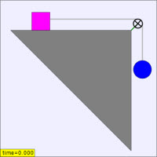

The Half-Atwood Machine JavaScript Model shows a mass on a table that is accelerated by a second hanging mass. The Atwood machine (or Atwood's machine) was invented in 1784 by Rev. George Atwood as a laboratory experiment to verify the mechanical laws of motion with constant acceleration. The ideal Atwood Machine consists of two objects of mass m1 and m2, connected by an massless string over an ideal massless pulley. The half Atwood machine is a variation of that device.
Atwood's machines are a common classroom demonstration used to illustrate principles of classical mechanics because the equations of motion are easy to derive.
The Half Atwood Machine JavaScript Model was developed by Wolfgang Christian using version 5 of the Easy Java Simulations (EJS 5) modeling tool. Although EJS is a Java program, EJS 5 creates stand alone JavaScript programs that run in almost any browser. Information about EJS is available at: <http://www.um.es/fem/Ejs/> and in the OSP ComPADRE collection <http://www.compadre.org/OSP/>.